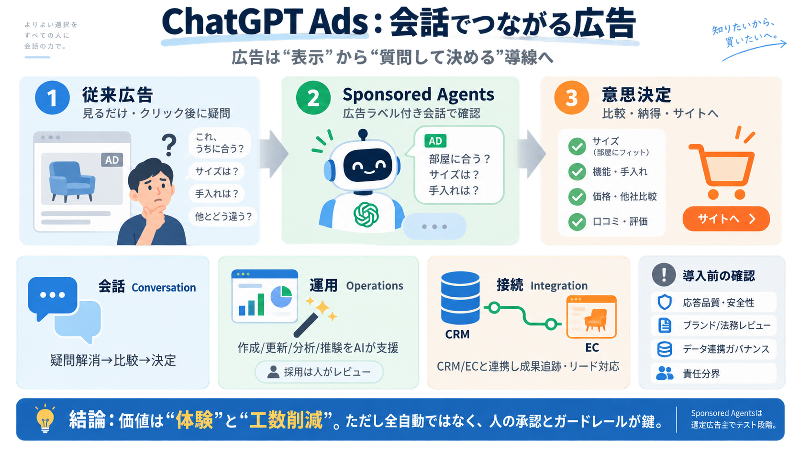

OpenAI Roadmap 2026: What Shipped and What Slipped | Index Lab
| Availability across Shopify's merchant base. | Shopify's president said about a dozen merchants had gone live. Forrest…

| Availability across Shopify's merchant base. | Shopify's president said about a dozen merchants had gone live. Forrest…
The testing was conducted by the Commerce Department's Center for AI Standards and Innovation, with OpenAI sending techn…
The GPT-5.6 family is available in Kiro starting August 24, 2026, with access through the Kiro site. Both companies say …
| Topic | | Replies | Views | Activity | --- --- | 5.6 pro model has been automatically downgraded and routed to the…
OpenAI released GPT-6 Astra on September 3, 2026, its top-performing model on coding, science, and cybersecurity benchma…